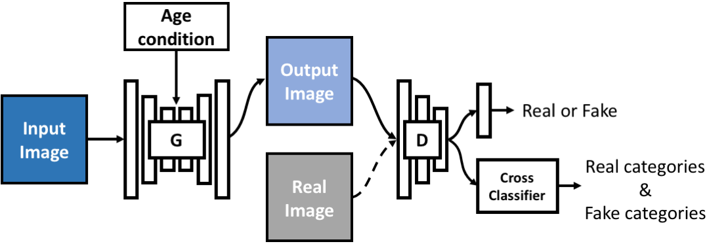
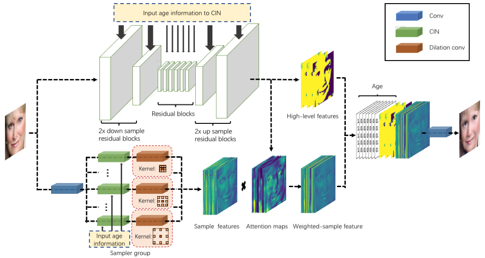

| Si Liu1 | Defa Zhu2 | Renda Bao2 | Chen Gao2 | Yu Chen3 |
| Bo Li1 | Shuicheng Yan4 |
| 1School of Computer Science and Engineering, Beihang University | |||
| 2Chinese Academy of Sciences | |||
| 3JD.com | |||
| 4Qihoo 360 AI Institute, Beijing, China |
Conditional GANs (cGANs), as variants of GANs, are the key to many applications. However, in the GAN community, the research on the interpretability of cGAN is uncommon. We therefore provide an intuitive way to explain a family of cGAN that are conditional on categorical variables, called the view of pull and push terms. The purpose of the pull term is to direct the generator to tend to fit a target distribution, while the push term forces the generator away from a taboo distribution. Based on this interpretation, A component called the cross classifier, with multiple effective push terms and one pull term used to guide the optimization of generator G, is designed for the discriminator. To verify the validity of our interpretation method and test the performance of cross classifier, we performed the necessary experiments on large-gap face aging task, which can be modeled by this family of cGAN. At the same time, for this task, we have designed a novel and efficient generator following the guidelines of balance the impact of face image input and conditional information input on response of generator. Furthermore, in order to constrain the correlation between synthetic face and input face and the consistency of key attributes between different age transformations, we propose a flexible triangular consistency constraint. Finally, experimental results demonstrate the proposed interpretation is instructive and the proposed framework exceeds the state-of-the-art with a significant gap.

Figure 1. This figure displays the abstract model we designed inspired by the view of pull and push terms. Age is divided into C groups as category condition which is inputted to the condition receiver of generator G. Each category y 2 {1, · · · , C } is subdivided into real and fake categories, yt and yf , to indicate whether it is derived from real distribution or synthetic distribution. We let yt = y and yf = y + C for convenience. Face image x and age condition y, which are sampled from true marginal distribution q(x) and q(y) respectively, form pair (x,y) to input to generator to get G(x,y). In the training phase, generator G and discriminator D alternate training. In the training round of D, sampling real data (x, y) ⇠ q(x, y), D is trained to judge x as true and classify it into yt. When inputting G(x,y), D is trained to judge it as fake and classify it into yf. In the training round of G, G is trained to trick D so that D judges G(x,y) as true and classifies G(x,y) into yt. After the training is completed, the same face pairing different age conditions are inputted into G and G will output faces of the corresponding different age.

Figure 2. The generator is designed with a trade-off between two rules: 1.Fully and effectively utilizing the original image information; 2.Enhancing the conditional effect of G. The generator therefore is in the form of two-stream structure, including sampler group and deep network backbone. For first rule, the sampler group, which is modeled by multiple convolutions with different dilation rates as drawn in bottom stream, is devised for sampling different distance information. For the second rule, the condition information is input to everywhere in the generator to enhance conditional effect. CIN [12] is embedded in all the residual blocks in the deep network backbone and sampler group. Let N is the number of samplers. In addition to generating high-level features, the deep network backbone predicts N attention maps to weight the corresponding sampler sampling results to obtain weighted-sample features. Finally, the high-level features, weighted-sample features and conditional information are combined to generate image that satisfies the input condition.